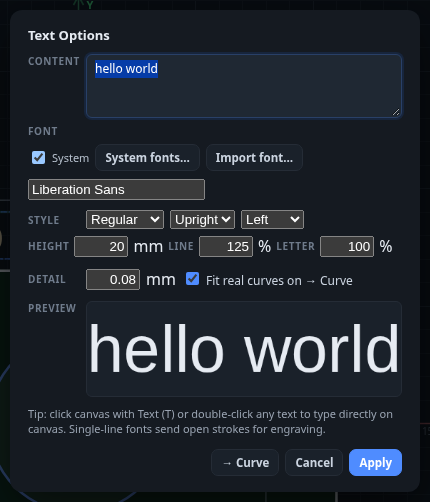

Teks & Font
Tekan T untuk menempatkan objek teks. Isi konten, pilih font, berat, miris, dan jarak huruf di dialog, lalu double-click teksnya nanti untuk membuka kembali dan mengedit.

1. Properti teks
| Properti | Keterangan |
|---|---|
| Content | Isi tulisan objek teks. |
| Font | Pilih keluarga font dari daftar. |
| Weight | Light / Regular / Semibold / Bold. |
| Style | Upright / Italic. |
| Align | Left / Center / Right untuk setiap baris di dalam kotak teks. |
| Height | Tinggi teks dalam mm. |
| Line (leading) | Jarak antar baris, persentase dari ukuran font (125 = normal). |
| Letter (tracking) | Jarak horisontal antar huruf, persentase dari ukuran font (100 = normal; nilai negatif menarik huruf sampai overlap, cocok untuk Text weld). |
| Detail | Keturukuran outline mengikuti glip (mm, default 0,08; lebih besar = lebih sedikit titik). |
Three points & two green guides: objek teks memiliki tiga titik dan dua garis bantu hijau (awal, lebar, tinggi). Hijau berarti travel-only di KaryaCNC, jadi garis bantu tidak pernah dipotong; selain itu berperilaku seperti garis biasa dan bisa diberi constraint H/V, sudut, tegak lurus, dan dimensi.
2. Kelompok font
Daftar font dikelompokkan menurut kegunaan:
- Single-line (engrave) — font goresan (Hershey Simplex dan Script). Setiap glip adalah polyline terbuka, cocok untuk engraving dan V-carving. Digambar, di-trace, dan dikirim sebagai open path — satu per batang huruf, tanpa loop tertutup.
- Sans, Serif, Monospace, Script, Display — kelumumpan outline standar.
- Imported — font yang kamu impor (.ttf / .otf / .woff) dari disk, disimpan di IndexedDB browser ini saja, tidak pernah diunggah.
- System — font terpasang komputer melalui Chromium Local Font Access (Chrome / Edge only; satu dialog izin, nama diingat, byte tidak diunggah).
Fit real curves on → Curve: dengan nyala, dialog membangun glip sebagai beberapa kurva Bézier asli; dengan mati, kamu mendapat satu garis lurus per segmen kontur. Double-click teks untuk mengedit kembali. Dimensikan green handles untuk mengubah ukuran teks. Single-line font mengirim open stroke untuk engraving.
3. Frame dan dimensi
- Tanpa dimensi, frame bebas.
- Satu dimensi menjaga perbandingan huruf (glyph ratio).
- Dua dimensi melepasnya sehingga teks bisa diregangkan.
- Drag titik tinggi ke samping dan teks menjadi miring (shear); putar garis lebar dan teks ikut berputar.
- Teks baru mulai horizontal dan tegak lurus. Tekan H atau [ pada garis bantuan untuk melepaskan dan gunakan frame yang diputar atau miring.